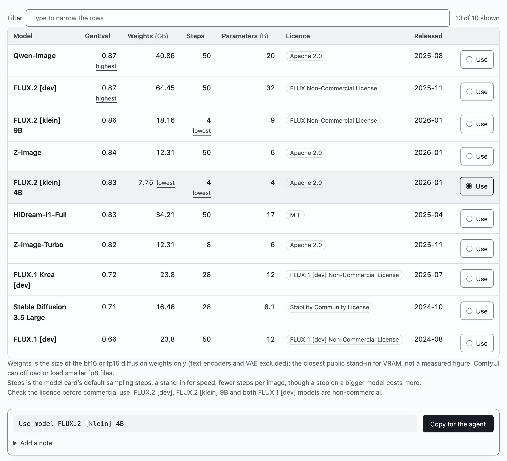

Ask for a page.
Pick on it.
The agent carries on.
One skill turns what your agent just found into a small page you can sort, read or pick from.
show these checkpoints as a table I can sort and let me pick one
page: /tmp/intelligent-ui-anything/comfyui-models.html
shape: compare, 10 rows, 53 KB
check: pass (floor 12/12, lint 0 FAIL)
opened: yes, with open
decision: Use model FLUX.2 [klein] 4B
